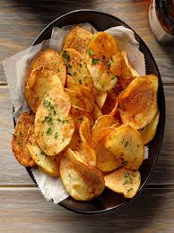

Potatoe crisps

Ingredients
- 1 and a half potatoes per person
- half a stick of butter
- italian seasoning to taste
- onion slices
- garlic cloves
Steps
- Peel potatoes into thin, see through slices.
- Chop onion.
- Chop 3~ cloves of garlic.
- Melt a quarter stick of butter into pan.
- Set stove to medium and cook potatoes until browning. Add butter and stir as needed.
- Add onion slices and garlic pieces.
- Enjoy.